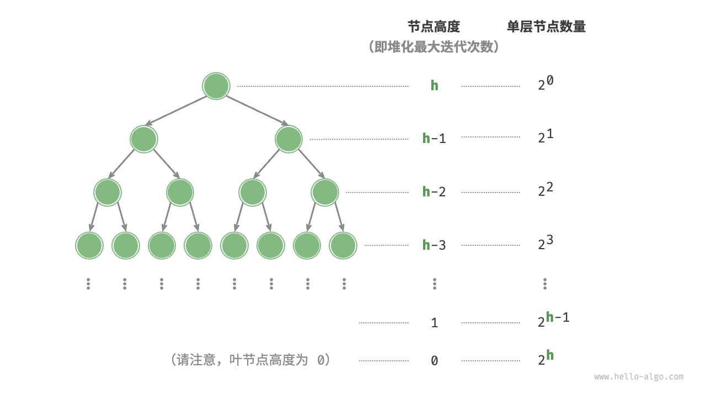

建堆操作
在某些情况下，我们希望使用一个列表的所有元素来构建一个堆，这个过程被称为“建堆操作”。
借助入堆操作实现
我们首先创建一个空堆，然后遍历列表，依次对每个元素执行“入堆操作”，即先将元素添加至堆的尾部，再对该元素执行“从底至顶”堆化。
每当一个元素入堆，堆的长度就加一。由于节点是从顶到底依次被添加进二叉树的，因此堆是“自上而下”构建的。
设元素数量为 $n$ ，每个元素的入堆操作使用 $O(\log{n})$ 时间，因此该建堆方法的时间复杂度为 $O(n \log n)$ 。
通过遍历堆化实现
实际上，我们可以实现一种更为高效的建堆方法，共分为两步。
- 将列表所有元素原封不动地添加到堆中，此时堆的性质尚未得到满足。
- 倒序遍历堆（层序遍历的倒序），依次对每个非叶节点执行“从顶至底堆化”。
每当堆化一个节点后，以该节点为根节点的子树就形成一个合法的子堆。而由于是倒序遍历，因此堆是“自下而上”构建的。
之所以选择倒序遍历，是因为这样能够保证当前节点之下的子树已经是合法的子堆，这样堆化当前节点才是有效的。
值得说明的是，由于叶节点没有子节点，因此它们天然就是合法的子堆，无须堆化。如以下代码所示，最后一个非叶节点是最后一个节点的父节点，我们从它开始倒序遍历并执行堆化：
"Python"
def __init__(self, nums: list[int]): """构造方法，根据输入列表建堆""" // 将列表元素原封不动添加进堆 self.max_heap = nums // 堆化除叶节点以外的其他所有节点 for i in range(self.parent(self.size() - 1), -1, -1): self.sift_down(i)"C++"
/* 构造方法，根据输入列表建堆 */ MaxHeap(vector<int> nums) { // 将列表元素原封不动添加进堆 maxHeap = nums; // 堆化除叶节点以外的其他所有节点 for (int i = parent(size() - 1); i >= 0; i--) { siftDown(i); } }"Java"
/* 构造方法，根据输入列表建堆 */ MaxHeap(List<Integer> nums) { // 将列表元素原封不动添加进堆 maxHeap = new ArrayList<>(nums); // 堆化除叶节点以外的其他所有节点 for (int i = parent(size() - 1); i >= 0; i--) { siftDown(i); } }
复杂度分析
下面，我们来尝试推算第二种建堆方法的时间复杂度。
- 假设完全二叉树的节点数量为 $n$ ，则叶节点数量为 $(n + 1) / 2$ ，其中 $/$ 为向下整除。因此需要堆化的节点数量为 $(n - 1) / 2$ 。
- 在从顶至底堆化的过程中，每个节点最多堆化到叶节点，因此最大迭代次数为二叉树高度 $\log n$ 。
将上述两者相乘，可得到建堆过程的时间复杂度为 $O(n \log n)$ 。但这个估算结果并不准确，因为我们没有考虑到二叉树底层节点数量远多于顶层节点的性质。
接下来我们来进行更为准确的计算。为了降低计算难度，假设给定一个节点数量为 $n$ 、高度为 $h$ 的“完美二叉树”，该假设不会影响计算结果的正确性。

如上图所示，节点“从顶至底堆化”的最大迭代次数等于该节点到叶节点的距离，而该距离正是“节点高度”。因此，我们可以对各层的“节点数量 $\times$ 节点高度”求和，得到所有节点的堆化迭代次数的总和。
$$ T(h) = 2^0h + 2^1(h-1) + 2^2(h-2) + \dots + 2^{(h-1)}\times1
$$
化简上式需要借助中学的数列知识，将对 $T(h)$ 乘以 $2$ ，得到：
$$ \begin{aligned} T(h) & = 2^0h + 2^1(h-1) + 2^2(h-2) + \dots + 2^{h-1}\times1 \newline 2 T(h) & = 2^1h + 2^2(h-1) + 2^3(h-2) + \dots + 2^{h}\times1 \newline \end{aligned}
$$
使用错位相减法，用下式 $2 T(h)$ 减去上式 $T(h)$ ，可得：
$$ 2T(h) - T(h) = T(h) = -2^0h + 2^1 + 2^2 + \dots + 2^{h-1} + 2^h
$$
观察上式，发现 $T(h)$ 是一个等比数列，可直接使用求和公式，得到时间复杂度为：
$$ \begin{aligned} T(h) & = 2 \frac{1 - 2^h}{1 - 2} - h \newline & = 2^{h+1} - h - 2 \newline & = O(2^h) \end{aligned}
$$
进一步，高度为 $h$ 的完美二叉树的节点数量为 $n = 2^{h+1} - 1$ ，易得复杂度为 $O(2^h) = O(n)$ 。以上推算表明，输入列表并建堆的时间复杂度为 $O(n)$ ，非常高效。